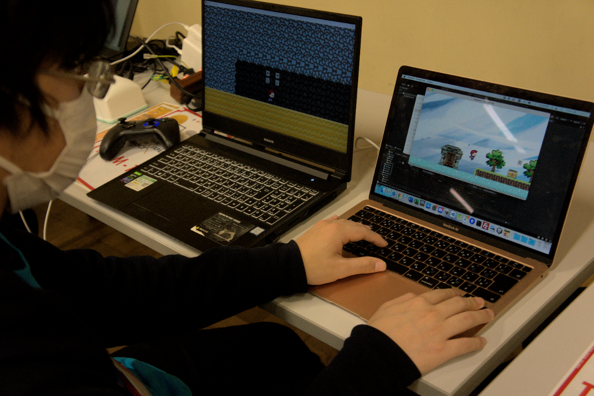
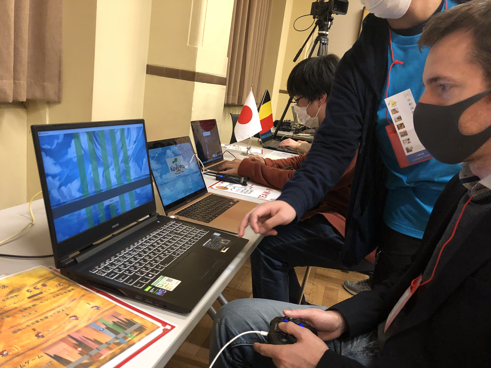

Rizulrimo - The last tree
Our hero woke on a deserted planet on which remains only one plant. But the sprout is dying, threatening the balance of our world. In order to save the last tree ,the hero must pass through the five doors and explore the worlds of the elements of godai.
私たちのヒーローは、植物が 1 つしか残っていない人けのない惑星で目覚めました。しかし、新芽は死にかけており、私たちの世界のバランスを脅かしています。最後の木を救うために、主人公は5つの扉をくぐり抜け、五代の要素の世界を探索しなければなりません。
itch.io より引用、そして翻訳
| ゲーム名 | Rizulrimo - The last tree |
|---|---|
| ジャンル | 2Dアクションゲーム、リズムゲーム |
| 制作期間 | 2日 |
| 制作人数 | 9人(プランナー:3 プログラマー:3 デザイナー:3) |
| 担当箇所 | リズムゲーム部分 |
| 使用ツール | Unity |
| 使用言語 | C# |
| リリース日 | 2022/12/05 |
このゲームは2022年に開催された「Belguim Japan ゲームジャム2022」にて制作したゲームです。主要制作期間は約2日間で、メンバーは9人です。
・概要
このゲームは、「バランス」をテーマに制作されたゲームで、ステージを一つクリアするごとに主人公のできることが一つ増えていくアクションゲームと五行の要素を取り入れたリズムゲームです。途中には、日本やベルギーで有名な建造物が出てきます。
・スクリーンショット
・展示の様子
- 


- 
展示は12月９日に行われました。ベルギー王女にも実際会うことができるという、大変貴重な経験をすることができました。
大学のホームページにも少しだけイベントの様子が載っています。
・担当した箇所のソースコード
今回は、リズムゲームの部分を担当しました。そのうちの一部のスクリプトを紹介します。
CSVWriterは、今回担当した中で一番苦労したスクリプトです。指定したCSVファイルにノーツの出るタイミングと場所のデータを書き込むというスクリプトです。
今回は、あまり時間がなく、ノーツをもう少し計算して配置できなかったことが悔やまれます。
あとは、それをステージの数だけ生成し、各ステージでそのCSVファイルをもとにノーツを生成しています。